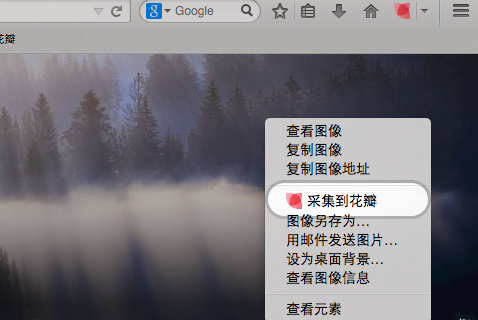

花瓣采集工具
使用花瓣采集工具，
你可以方便的保存任意网站上的图片.视频和截图
你可以方便的保存任意网站上的图片.视频和截图
Chrome 浏览器


你还可以选择安装 书签栏采集工具
如何使用花瓣 Chrome 扩展？
方法一
浏览网页时，看到页面上感兴趣的图片、网页、视频，点击右上角的花瓣图标，选择相应功能进行采集。
方法二
浏览网页时，把鼠标停留在你喜欢的图片上，点击右键，选择“采集到花瓣”（此方法不起作用时，推荐方法一）
Firefox（火狐）浏览器
你还可以选择安装 书签栏采集工具
如何使用花瓣 Firefox 附加组件
方法一
浏览网页时，看到页面上感兴趣的图片、网页、视频，点击右上角的花瓣图标，选择相应功能进行采集。

方法二
浏览网页时，把鼠标停留在你喜欢的图片上，点击右键，选择“采集到花瓣”（此方法不起作用时，推荐方法一）

IE 浏览器

其它浏览器